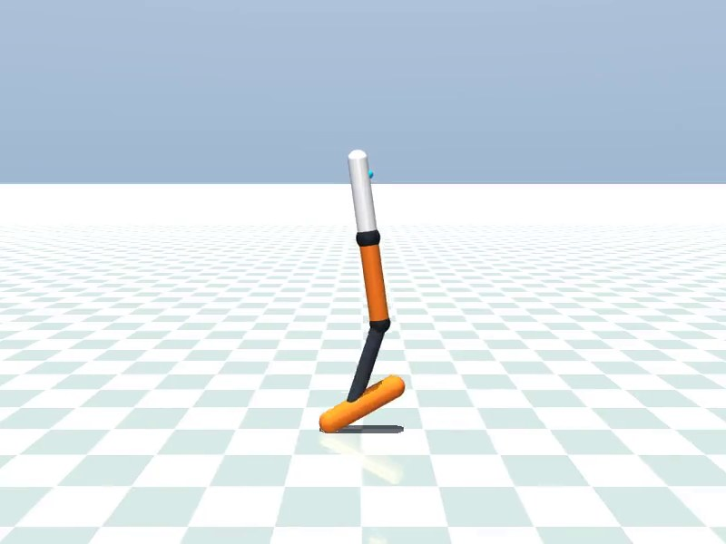

The question
A one-legged robot learns to hop only from recorded examples, never by practising (offline RL). Real logs mix good and poor behavior. If a few expert examples are mixed into a weak pile, which learner makes better use of them?
The dial: expert share p
Each training set holds 900k moves, a share p from whole expert episodes. Weak episodes are shorter (about 510 vs. 920 steps), so expert episodes are a smaller share of starts than of moves.
Two learners, one difference
Behavior cloning
Copies every recorded move equally.
Implicit Q-Learning
Learns which moves lead to more reward and copies those more (β = 3, τ = 0.7, weights clipped at 100).
Same network, data, normalization and 300k steps. BC is IQL with β = 0.
Fixed in advance
- H1BC's score rises with p.
- H2IQL reaches near-expert (90) at a much lower p than BC.
- H3A pickier IQL (higher τ) helps more at 5% than at 50%.
Pre-registered 2026-11-21, before any grid result; development runs had already hinted that H2 might fail. Exact one-sided sign-flip test on 5 seeds: it passes only if all 5 agree (P = 1/32 = 0.031). No correction across H1 to H3.
Expert data helps BC only at 100%. IQL breaks down in between.
Training makes IQL worse, not just unhelpful
Score every 5k steps on 10 shared test episodes (thin: seeds, thick: mean). At 5% and 20% expert, IQL is best at its first evaluation (57.4 and 68.4) and declines to 9.5 and 29.4 by 300k. BC settles near 82 by 50k and stays.
Limits and next steps
Limits
- One robot, one dataset pair; the weak data is strong (BC scores 82 on it).
- IQL at its standard MuJoCo settings, 300k steps; late policies are fragile.
- 5 seeds: a test passes only if all 5 agree.
Next
- Keep IQL's critic, change extraction (DDPG+BC, weight floor or clip).
- Add filtered and return-weighted BC baselines.
- Win = 5+ points over BC on every seed at 20% and 50%.
Case study: 5% expert, one test episode
 BC · step 500HOPS ALL 1,000
BC · step 500HOPS ALL 1,000 IQL · step 0
IQL · step 0
step 14 step 27FALLS
step 27FALLSEach method's median-scoring run on test episode 10000, the logged episode replayed exactly: BC hops for all 1,000 steps, IQL falls after 27.
Verdicts
Why?
BC is hard to beat here
Its deterministic action rarely falls, while the data falls in 66% (weak) and 28% (expert) of episodes; when it doesn't fall, BC returns what the data does. So BC scores 82 on 42.7-point data.
At 5%: first-action lock-in
IQL's critic rates the 49 expert first steps far above the 1,681 weak ones (advantage about 10 vs. −0.8): 48 of 49 weights hit the clip, so IQL copies the expert's first move but can't follow the expert gait with so few episodes. Giving IQL BC's first action lifts it from about 0.4 to 71 to 83 (3 runs).
From 20% up: weaker gait-following
Started on the same expert move, BC follows the expert gait better (by 36 and 40 points); IQL's action error on expert moves is 11 to 17% higher, only 3.5% at 100%.